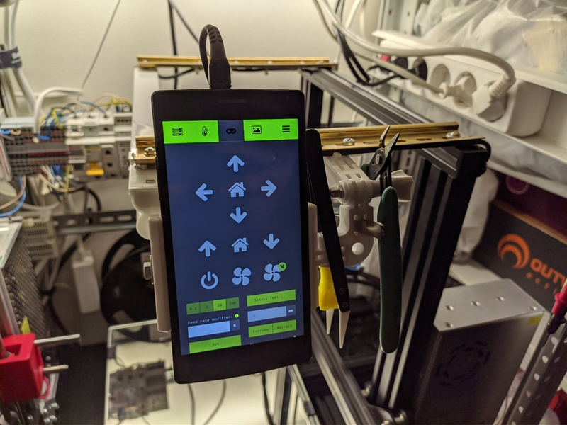

Про переход будущего в настоящее и деградацию человеков
Как это уже не раз бывало, Костя Шагинян (привет тебе огромный) из 100+8 выложил пост, на который я начал отвечать и в процессе понял, что мой ответ лучше будет оформить в виде отдельного поста.
Костя писал про электромобили, противопоставляя их ДВС, а у меня как раз есть что рассказать по этому поводу.
Теги: auto
История одного факапа
Послушал тут предпоследний 769-й выпуск подкаста Radio-T, в котором обсуждение технических ошибок напомнило мне примерно аналогичный случай из моей практики.
Давным давно, когда я ещё работал в xsolla, которая ещё в то время носила название 2pay, у нас по большому счёту был всего один основной сервер в Московском датацентре, на котором крутился весь мир. Передо мной стояла задача написать скрипт, который зачищает старые логи, временные файлы и прочее, что может занимать много места.
Теги: shell, админское, жизненное
Про профдеформацию

Вчера мучался с настройкой сетевой связности между ЦОДом одной компании и подсетью телеком оператора на объекте. Бриджи, туннели, роутинг и вот это всё. Сегодня под утро уже приснился сон, перед тем, как жена разбудила. Решил поделиться с вами. :)
Приходим мы с женой в ЗАГС регистрировать ребёнка, а нам тётка и говорит - выдадим вам тридцатую подсеть, будет у вас четыре айпишника - адрес сети, где ребёнок с мамой прописан, широковещательный и два айпишника как раз остаются маме и ребёнку.
Я: - Эй, а я? А как же я?
Тётка: - А что ты? Много ты участия в этом процессе принимал? Она его вынашивала, рожала, ночами не спит. Может вам 29ю подсеть выделить? Куда ещё 3 адреса денете? Я не верю, что вы четверо детей планируете, а с адресами у нас и так дефицит. Ничего, за натом посидишь, сам себе там подсеть выдели серую, найдёшь оборудование.
На этом моменте я проснулся.
Теги: fun, networking
Последовательное разворачивание словарей и списков в Python

Бывают такие вещи, до которых постоянно не доходят руки и это одна из них. Если у нас есть объект большой вложенности, то мы не можем в python, как скажем, в java извлечь нужное значение, указав объект и последовательность его ключей. Нам приходится двигаться последовательно вглубь объекта, проверяя наличие нужного нам ключа на каждом уровне вложенности, а то и тип самого объекта. Решения существуют, но в виде отдельных библиотек - pydash, dictor и, вероятно, каких-то иных, которые необходимо ставить отдельно. Не люблю лишние зависимости, если вместо них можно обойтись десятком строк.
Теги: python
Про мотивацию и удалёнку
Знакомая выложила пост, в котором попыталась для себя определить плюсы и минусы удалёнки. Вот ссылка на оригинал, ниже для простоты я приведу его полностью:
Есть боль. Людей стало еще сложнее затащить в офис - маркетологов, ит-специалистов, телемаркетологов.
А в чем кайф-то работать дома? Ты же не граничишь дом и работу, ты все время работаешь!
⠀
Какие я вижу плюсы удаленки для себя:
⠀
1. Спишь на 1 час подольше
2. Можешь сделать перерыв и выйти на улицу, чтобы подышать воздухом или пообниматься с собакой.
3. Вкусный обед дома (если он готов)
4. Не тратишь время на перемещения по встречам, все вопросы решаешь в онлайне.
Все!
⠀
Какие я вижу минусы в целом:
⠀
1. Работаешь постоянно. Время 19:00, ты вроде закончил, но устойчивое ощущение, что надо еще что-нибудь сделать.
2. Если у работодателя нет инструментов контроля и отчетности своих сотрудников, есть риск, что они прилегли в обед на час, а встали через 3, прикрываясь предлогом встреч. Ну или они поехали на встречу, заехали по магазинам...
3. Не видишь групповую динамику и результат каждого лично, не видишь эмоций, а соответственно не можешь управлять ситуацией.
4. Задачи могут растягиваться на день, когда можно было бы решить вопрос за минуту, задав его руководителю здесь и сейчас. Да, не все звонят, когда это нужно.

Ниже приведу свои комментации, отражающие другое видение ситуации:
Теги: жизненное
Удобное использование TTS яндекс станции в скриптах при интеграции в Home Assistant
Я просто оставлю это здесь на всякий случай как шпаргалку. У меня периодически возникает необходимость оповещения о чём-то голосом. Например, о провале выполнения какого-нибудь процесса бекапа или об окончании процесса печати детали 3д принтером или о чём угодно другом.
Теги: 3d-printing, automatization, smarthome, homeassistant
Про "службу безопасности Сбербанка"

Как минимум, раз в месяц, как максимум пару-тройку раз в неделю мне звонят из "службы безопасности Сбербанка". Я уже привык, я уже знаю всё наизусть и вот как обычно проходит наш диалог:
- Здравствуйте, меня зовут Дарья, я из службы безопасности Сбербанка...
- Здравствуйте, Дарья! Я хочу сыграть с вами в одну игру. Спонсор нашей сегодняшней передачи статья 159 УК РФ, часть вторая. Внимание, вопрос - что выберет прокурор:Вариант А: Штраф до трёхсот тысяч рублей.
Варинат B: Исправительные работы на срок до двух лет.
Вариант С: Заработная плата или иной доход за период до двух лет.
Вариант D: Принудительные работы сроком до пяти лет с возможным ограничением свободы на срок до одного года.
Вариант Е: Лишение свободы на срок до пяти лет с ограничением свободы на срок до одного года.
И да, уважаемая Дарья, я могу рассказать вам, как вас можно найти... Кстати, карты сбербанка у меня нет и никогда не было.
Что радует, многие дослушивают до конца, хотя кто-то сразу бросает трубку, когда диалог идёт не по сценарию и становится очевидно, что я не принял за чистую монету обращение из "службы безопасности". Спасибо огромное Дмитрию Бачило за то, что он аггрегировал нужную информацию в одном видео. Очень хотелось бы, чтобы это видео увидело как можно больше людей, начиная от ваших родных и близких (особенно пожилых) до тех, кто "работает" в этих коллцентрах сотрудниками "службы безопасности Сбербанка". Даже не буду убирать видео под кат.
Теги: жизненное
Для чего нужны старые android смартфоны на самом деле

А теперь немного о нестандартном применении стандартных вещей. У моей маман как-то раз полгода тому отказал телефон (MegaFon Login +). Был он куплен в 2015-м году по акции мегафона за 2500 рублей, кажется. Точнее, по акции он продавался за 3990, а я купил у сотрудника мегафона за 2500. Был разлочен с мегафона, затем в корпусе вырезано было дополнительное отверстие, что позволило получить доступ ко второй симкарте. Мегафон просто взял один китайский OEM телефон с непроизводимым названием, заребрендил прошивку, закрыл один слот пластиковой панелью и выпустил это всё на рынок по рекордно низкой цене. В итоге за свои 2500 рублей телефон проработал 4 с лишним года, после чего у него отказал динамик (он и разговорный и не очень - просто меняется сила звука в зависимости от варианта использования). Для маман был приобретён новый телефон, а мегафон до поры/времени выложен на полку. Ремонтировать это чудо бессмысленно, динамик найти и поставить будет стоить почти столько же, за сколько я весь смартфон приобрёл новым, да и производительность у него уже давно не соответствует требованиям времени. Продать такой старый смартфон, с порядочно подсевшим аккумулятором, да ещё и неработающим динамиком тоже вряд ли получится, а если и получится, то за бесценок. Если за него и дадут, то рублей 500, не больше, да и то очень сомнительно.
Но кролики - это не только ценный мех. В конце-концов, смартфон - это отличный ёмкостный дисплей, процессор, память и вообще среда выполнения приложений.
Теги: 3d-printing, android-soft, automatization, hardware, pi, shell
Очередное рабочее

Ты пожалуй, неплохо разбираешься в том, что ты делаешь, если можешь простым языком объяснить любому человеку с любым образованием суть и аспекты своей деятельности.
Менеджеры попросили "по-человечески русским языком" объяснить, что происходит на скриншотах приложения, захватывающего и аггрегирующего данные сип сессий. Пришлось переводить на язык простых смертных.
Краткая сцена, описывающая суть происходящего на скриншотах выше. Действующие лица: Вася - сервер компании Вася, Коля - наша промежуточная Петяка, которую я настраиваю, Петя - боевая Петяка.
Теги: админское
Про упёртость, логику, бюрократию и внутреннее раздражение

У вас бывает такое, что в силу определённых обстоятельств вам необходимо сделать что-то, что не укладывается в ваши представления о прекрасном / правильном / логичном? Насколько это вас раздражает и как вы с эти боретесь? Казалось бы, на работе тебе платят деньги за то, что ты решаешь определённые задачи. И решаешь их в той форме, в которой это нужно заказчику. Если заказчик требует, чтобы ты забил гвозди микроскопом - бери и забивай, ты ведь осознаёшь, ради чего ты выполняешь эти действия. Но микроскоп всё-равно жалко - вот он, новенький блестящий, только что с завода! И ладно, если бы забивать гвозди должен был гипотетический Вася, но нет - ты должен сделать это сам своими руками и это бесит больше всего.
Теги: админское, подгорание